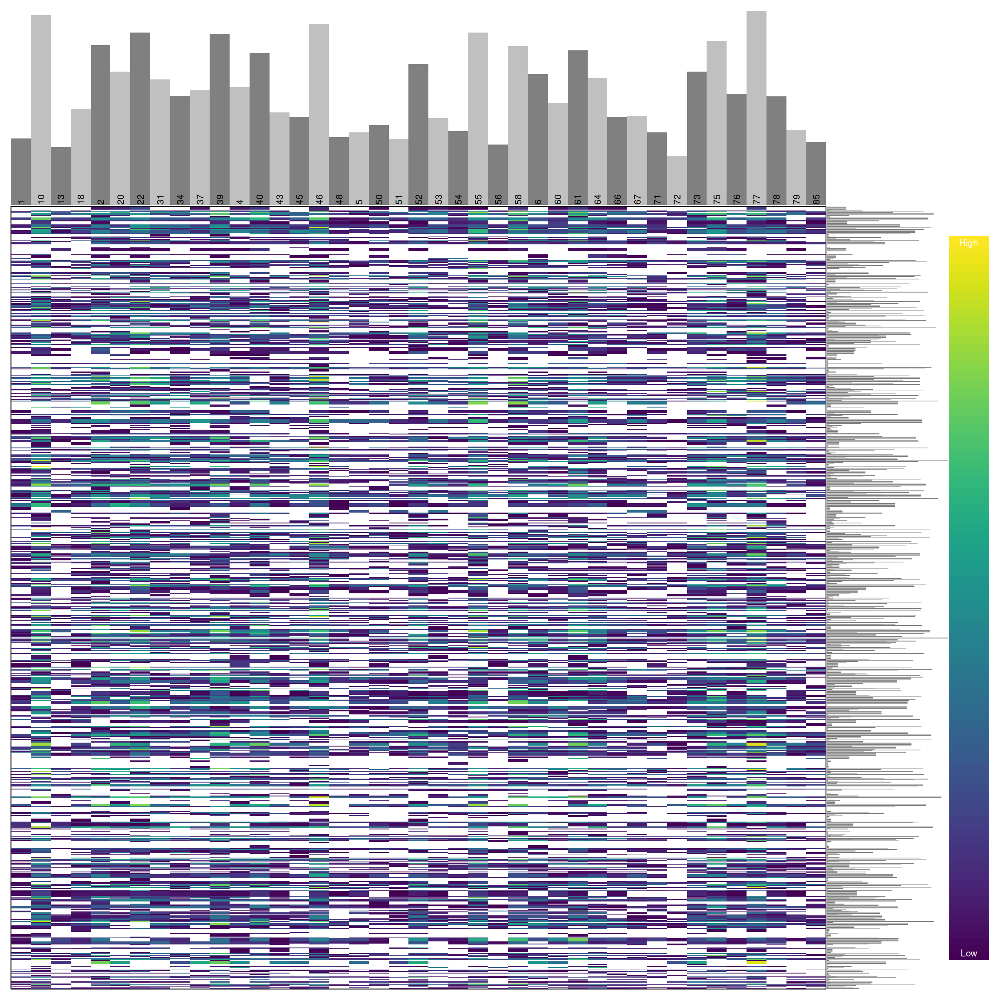

vcfR documentation
byBrian J. Knaus and Niklaus J. Grünwald
Omitting data
In the section on depth we learned how we can visualize variant depth, or any other numeric value provided in the gt portion of VCF data. In the section on censoring data we learned how to rescore variants that were outside our acceptance thershold as missing. And in the section on missing data we learned how to quantify and visualize missingness in our dataset. Here we put all of these skills together in order to omit samples and variants that have been set as missing (NA).
library(vcfR)
vcf <- read.vcfR('TASSEL_GBS0077.vcf.gz')
dp <- extract.gt(vcf, element = "DP", as.numeric=TRUE)vcf## ***** Object of Class vcfR *****
## 61 samples
## 7171 CHROMs
## 69,296 variants
## Object size: 47.7 Mb
## 37.62 percent missing data
## ***** ***** *****Because part of this exercise involves setting cells in our data matrix as NA we should begin by reminding ourselves of how abundant they are. By using the show method we see that we have over 35 percent missing data. We can now use what we learned previously to set variants that are outside our per sample inclusion threshold as NA.
quants <- apply(dp, MARGIN=2, quantile, probs=c(0.1, 0.8), na.rm=TRUE)
dp2 <- sweep(dp, MARGIN=2, FUN = "-", quants[1,])
dp[dp2 < 0] <- NA
dp2 <- sweep(dp, MARGIN=2, FUN = "-", quants[2,])
dp[dp2 > 0] <- NA
dp[dp < 4] <- NA
vcf@gt[,-1][ is.na(dp) == TRUE ] <- NAvcf## ***** Object of Class vcfR *****
## 61 samples
## 7171 CHROMs
## 69,296 variants
## Object size: 46.3 Mb
## 66.63 percent missing data
## ***** ***** *****We see that this censoring has increased the degree of missingness in our matrix to over 60 percent. Ideally we should visualize the results of this action. For brevity, we will not here. But you can return to the section on depth and reuse the code presented there to visualize how this change has affected the distribution of the data.
heatmap.bp(dp[1:1000,], rlabels = FALSE)In this heatmap we see that we have samples in columns and variants in rows. The color ramp on the right represents the depth of coverage for each variant where yellow is high coverage and purple is low coverage. White is not part of our color ramp but it is a part of the heatmap. This is because white represents cells in our matrix that having missing data (NA). The marginal barplots sum the information accross columns and rows to tell us which samples (columns) or variants (rows) include a high or low amount of sequence coverage. In general we would like to see our sequence coverage uniformly distributed among our samples and variants.
Omitting samples
We can see that some samples have a high degree of missingness. By omiting these samples we may reduce the overall missingness in the data set.
myMiss <- apply(dp, MARGIN = 2, function(x){ sum( is.na(x) ) } )
myMiss <- myMiss / nrow(dp)
vcf@gt <- vcf@gt[, c(TRUE, myMiss < 0.7)]
vcf## ***** Object of Class vcfR *****
## 41 samples
## 7171 CHROMs
## 69,296 variants
## Object size: 35.7 Mb
## 53.33 percent missing data
## ***** ***** *****dp <- extract.gt(vcf, element = "DP", as.numeric=TRUE)
heatmap.bp(dp[1:1000,], rlabels = FALSE)
Omitting variants
Previously we have seen how to quantify and visualize missingness for variants in our dataset. We can use this information to omit variants that have a high degree of missingness.
myMiss <- apply(dp, MARGIN = 1, function(x){ sum( is.na(x) ) } )
myMiss <- myMiss / ncol(dp)
vcf <- vcf[myMiss < 0.2, ]
vcf## ***** Object of Class vcfR *****
## 41 samples
## 4563 CHROMs
## 18,782 variants
## Object size: 10.2 Mb
## 9.421 percent missing data
## ***** ***** *****dp <- extract.gt(vcf, element = "DP", as.numeric=TRUE)
heatmap.bp(dp[1:1000,], rlabels = FALSE)
Summary.
Through omitting samples and variants with a high degree of missingness we have taken a dataset that was over 35 percent missing data to a dataset that is now below ten percent missing data. We’ve also reduced tha sample size from 61 samples to 41. And we’ve reduced the number of variants from over 60 thousand to just below 20 thousand. How important any particular sample or variant is will have to be determined base on the specifics of any particular project. These actions have greatly improved the ratio of data to missing or low quality data in our dataset. Through exploring thresholds that are different from those implemented here one may be able to improve on this more. We can now proceed to downstream analyses of this dataset with greater confidence that the variants we are analyzing are of high quality.
Copyright © 2017, 2018 Brian J. Knaus. All rights reserved.
USDA Agricultural Research Service, Horticultural Crops Research Lab.